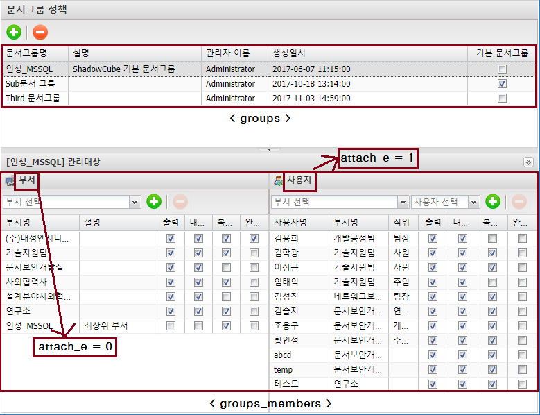
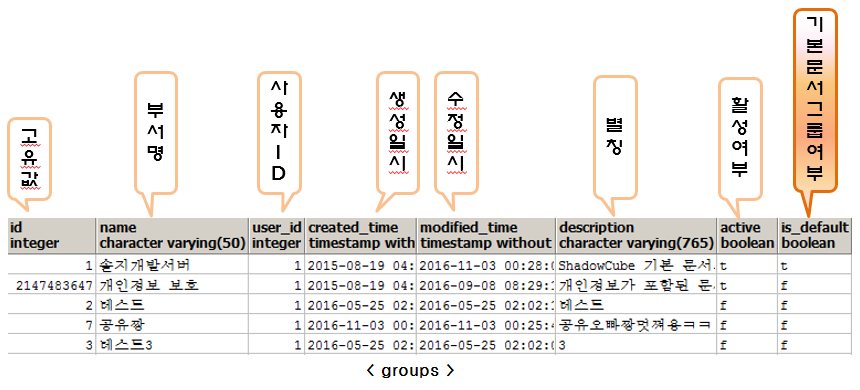
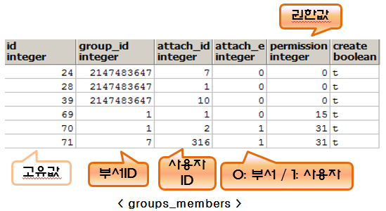

문서그룹 정책 (groups, groups_members)
-
문서그룹 정책에서 부서/사용자별로 권한을 지정할 수 있다.
-
부서에 문서그룹을 할당하면 그 부서의 하위 부서까지 적용된다.

※ 테이블 설명


attach_e / attach_id 설명
-
위 그림에서 attach_e = 0, attach_id = 1, group_id = 1 인 경우, 부서의 id 값이 1 인 부서는 문서그룹 id 1 에 속해 있다는 뜻이다.
-
위 그림에서 attach_e = 1, attach_id = 316, group_id = 7 인 경우, 사용자의 id 값이 316 인 사용자는 문서그룹 id 7 에 속해 있다는 뜻이다.
permission 값 설명
| 구분 |
10 진수 값 |
16 진수 값 |
2 진수 값 |
| 읽기 |
1 |
1 |
01 |
| 쓰기 |
2 |
2 |
10 |
| 출력 |
4 |
4 |
100 |
| 복사 |
8 |
8 |
1000 |
| 내보내기 |
16 |
10 |
10000 |
| 복호화 |
32 |
20 |
100000 |
| 변환 |
64 |
40 |
1000000 |
| 강제 암호화 |
128 |
80 |
10000000 |
| 완전 삭제 |
256 |
100 |
100000000 |
정책센터 > 문서그룹 정책 > 권한 변경 시 permission 값
-
모든 권한을 뺏을 경우 값: 11 (즉, 기본으로 읽기, 쓰기, 복사 권한은 존재한 상태임)
-
출력 권한만 부여한 경우 값: 15 (읽기: 1 + 쓰기: 2 + 복사: 8 + 출력: 4)
-
출력, 내보내기 권한만 부여한 경우 값: 31 (읽기: 1 + 쓰기: 2 + 복사: 8 + 출력: 4 + 내보내기: 16)
-
복호화, 완전 삭제 권한만 부여한 경우 값: 299 (읽기: 1 + 쓰기: 2 + 복사: 8 + 복호화: 32 + 완전 삭제: 256)
이전